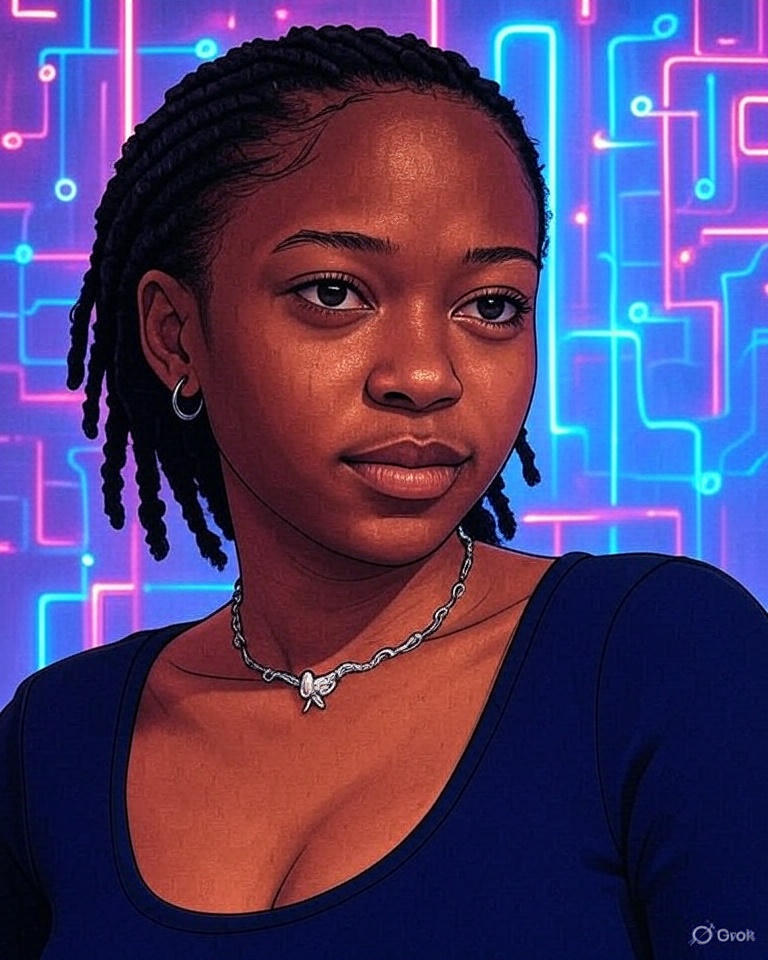

Meet Future Boitumelo

I am deeply passionate about shaping the future through web development and mobile app development, envisioning myself as a trailblazing innovator in these fields. My aspirations extend to mastering systems integration, harnessing the power of artificial intelligence and machine learning (AI/ML), and leveraging APIs to create seamless, impactful solutions. By 2030, I see myself leading cutting-edge projects that empower communities and drive technological advancement.
Fun Facts
- Tech Stack: React, Node.js, Python, AWS
- Location: Cape Town, South Africa
- Mission: Empowering African youth through tech education
Past Achievements
- 2024: Completed SheCodes bootcamp
- 2025: Graduated FNB App Academy
- 2026: Launched first mobile app